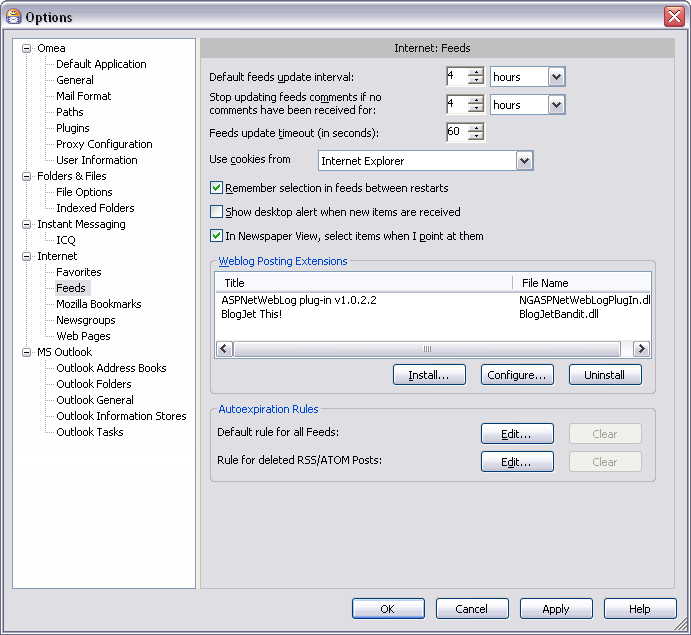
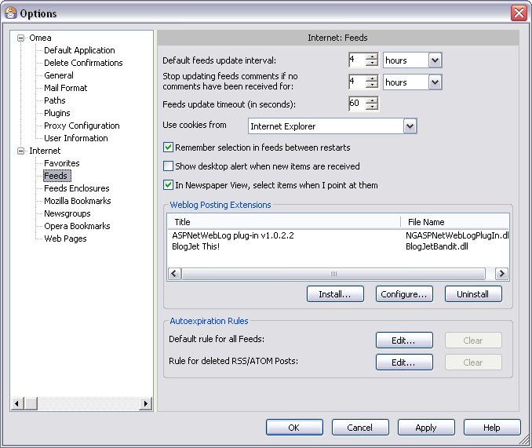

Feeds
You can access this option from the Main menu: Tools | Options: Internet: Feeds
Omea ReaderOmea Pro supports both RSS and Atom feeds. This page of the Options dialog provides options for controlling how Omea ReaderOmea Pro interoperates with feeds.

Feeds options in the Options Dialog
Default Feed Update Interval
This option enables you to specify how often Omea ReaderOmea Pro should update the feeds you are subscribed to. Please note that if you are not subscribed to any feeds, this setting has no effect.
The option has two controls placed left-to-right.
- The first holds a number that indicates how many units of time between updates. The minimum value is 1; the maximum value is 1000.
- The second is a drop-down list that provides a choice of units of time: minutes, hours, days, weeks or years.
For example, if you want your feeds updated once daily:
- Enter 1 in the first control’s edit box.
- Select days in the drop-down list.
You can either enter a number between 1 and 1000 in the number box, or use the "spin" buttons to ratchet the value upwards or downwards in intervals of 1.
Stop Updating Feed Comments…
This option allows you to control when the feed comments (replicas to the feed post) stop updating. Omea will not update the comments in feeds if comments stop appearing after the period of time which you specify here using the spinner to set the number (that indicates how many units of time between appearing the new comments ) and a drop-down list to select the time unit (minutes, hours, days, weeks or years).
Feeds Update Timeout
In some cases your feeds may stop updating because of some problems which take place on the feed server side for example. Timeout in general is a period of time after which an error condition is raised if some event has not occurred. In case of feeds the update timeout is a period after which information transmission error is assumed to have occurred. You can change this setting in Omea setting the time of this option control.
Use Cookies of…
Select one option from the drop-down list to tell Omea which Internet browser cookies you want it to use.
Cookies is a collection of information (usually including a username and the current date and time, stored on the local computer) used to identify users who have previously registered or visited the site.
The options available in the drop-down list derive from the web browsers you use (each web browser has its own cookies settings) and user profiles which you have in your browsers. You can also tell Omea not to use any cookies (select None from the drop-down list).
Setting the update interval for individual feeds
To change the update interval for a specific feed, you can select it in the Feeds pane, right-click, choose Properties from the context menu. The Feed Properties dialog appears and you can set the interval for this selected feed there.
If Remember selection in feeds between restarts checkbox is a selected, Omea ReaderOmea Pro will remember the selected item in RSS feeds between its restarts.
If Show a desktop alert when new items are received checkbox is selected, it shows a notification of any RSS item received by Omea ReaderOmea Pro. You may find this option very useful in your daily work.
If In Newspaper View, select items when I point at them checkbox is selected, the feed posts you are browsing in Newspaper View are selected automatically when you place the mouse pointer over the feed post.
Weblog Posting Extensions
The controls here enable you to manage the installation of weblog posting extensions.
Omea ReaderOmea Pro supports third-party weblog posting extensions which enable you to post replies to comments to a weblog from within Omea Reader Omea Pro. Posting extensions are typically Dynamic Link Library (DLL) files.
After you install a weblog posting extension, an item named Blog This appears on the main Action menu and on the context menu of RSS feed posts in the Feeds resource list. Each installed weblog posting extension appears as a submenu item, enabling you to choose which extension to use to post a reply to the weblog.
Posting Extensions List
This list displays the weblog posting extensions currently installed. The list has 2 columns:
- Title: Shows the name/title of the extension as defined in the extension’s DLL file.
- File Name: Shows the path and file name of the DLL file for the selected posting extension.
Install (button)
Enables installation of a new weblog posting extension. Launches a file selection dialog that enables you to navigate to and select the DLL file for the extension.
Configure (button)
Launches a dialog enabling you configure the currently selected weblog posting extension. Button is disabled if no extension is selected or there are no extensions in the list.
Uninstall (button)
The button removes the selected weblog client extension from Omea Reader Omea Pro. The extension files are not removed from the hard disk. You can reinstall the extension later using the Install button.
Autoexpiration Rules
This group of options will allow you to control the settings when Omea can consider the feeds posts “old” or outdated and actions which you want Omea Reader Omea Pro to perform with these outdated feed posts. Once you customize these options, you will manage to avoid the information clutter and always have latest and the most important information in your feed subscription. You can later edit these default expiration rules and define the per feed expiration rules (conditions, exceptions and actions) in the Rules Manager.
This group of options will allow you to control when Omea can consider the feeds posts “old” or outdated and actions which you want Omea to perform with these outdated feed posts. Once you customize these options, you will manage to avoid the information clutter and always have latest and the most important information in your feeds. You can later edit these default expiration rules and define per feed expiration rules (conditions, exceptions and actions) in the Rules Manager, Auto Expire tab or when you right-click the selected feed in the Feeds pane and select Edit Expiration Rules on the pop-up menu.
Default Rule for All Feeds
Using this group of options you can specify the default expiration rule for all feeds which you are subscribed to.
Rule for Deleted RSS/ATOM Posts
Using this group of options you can control what Omea ReaderOmea Pro will do with the feeds which it considers“old”. By default, these feeds are deleted but you can change this action if you specify something else in the Edit Expiration Rule dialog which appears if you click the Advanced button and specify other actions in it.